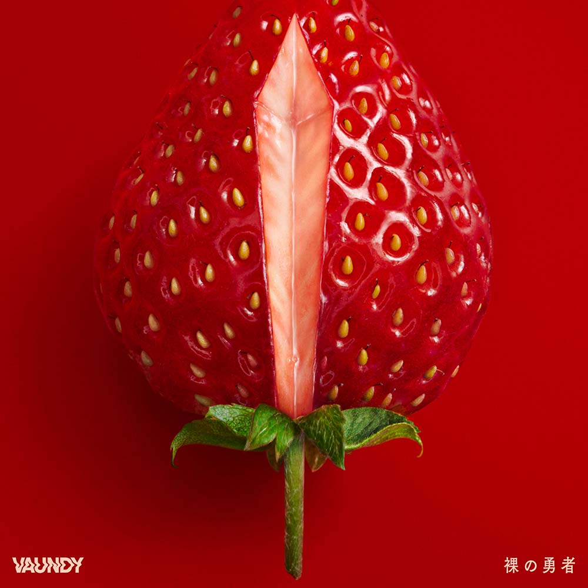
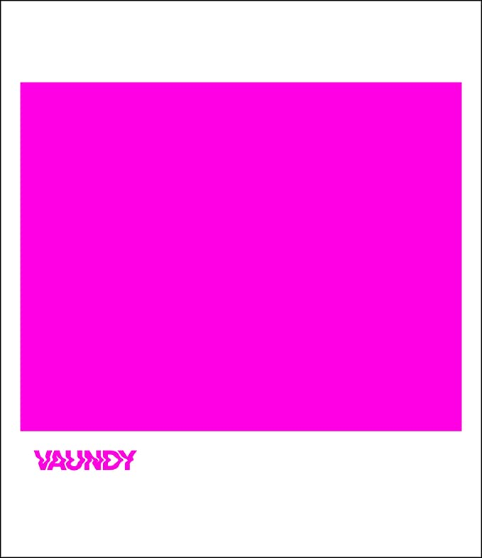

Vaundy

大学生ミュージックアーティスト
ロック、ヒップホップ、R&B、シンセ・ポップなどが
混合したジャンルレスな楽曲が特徴
大学でデザインを学んでいる経験が音楽活動にも影響を与えており、
アートワークやMVなど、音楽もデザイン的であることを意識
作詞・作曲・編曲のみならず、
クリエイターと協働してアートワーク制作、
映像プロデュースも手掛ける
「過去への憧れはありません。僕は、楽曲から映像制作までひとりでおこない、
Vaundyというアーティストを作りあげる。
音楽だけじゃなくてマルチアーティストとして生きていきたいんです。
だから、僕の作品をさまざまな角度から見てほしいですね」
DISCOGRAPHY

裸の王者
新曲「裸の勇者」を配信リリース。TVアニメ『王様ランキング』第2クールのオープニング主題歌。“敵味方”や”善悪”といった言葉では分けられない世界で生まれを感じ取れるような楽曲。
踊り子
「踊り子」は、ワンマンライブツアー “HINODE”で初披露された新曲で、ライブを締め括る楽曲として演奏。Vaundyの次のフェーズを感じさせる一曲。

strobo
作詞、作曲、アレンジを全て自分でこなし、アートワークのデザインや映像もセルフプロデュースするマルチアーティスト「Vaundy」がニューアルバム『strobo』をリリース。